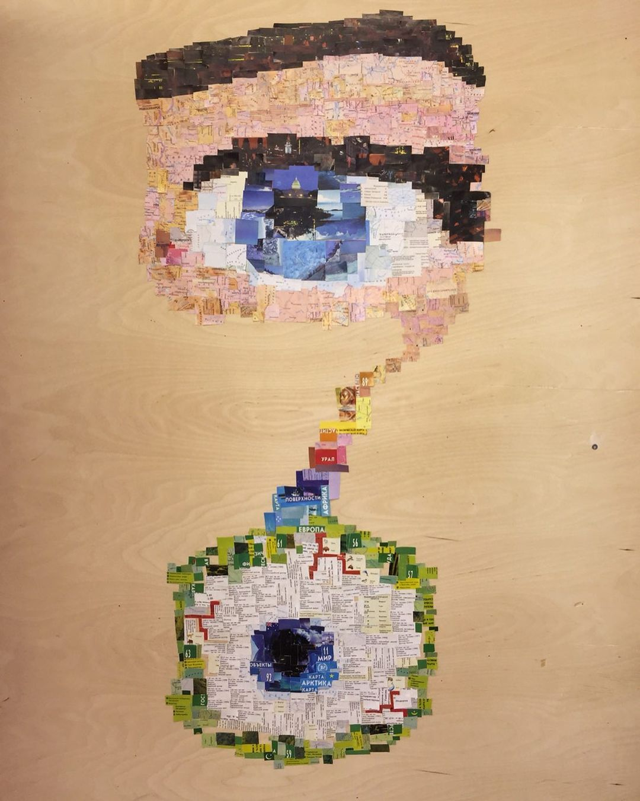

PlayMMoMA Camera
Having looked at the world around you through our camera, you can add geometric shapes to it, as Infante - Arana Francesco and Goryunova Nonna did in their series of photos “Close in the Far, Distant in the Near” without Photoshop.The first thought that came to me after we learned about the new project and about the artwork that our group got caught, I realized that I want to show with my work everything that Infante did. Infante’s work consists of a series of landscape photographs where he placed geometric shapes that look like they were added using Photoshop. Therefore, we have found a way to make such a “camera” with the help of which museum visitors will repeat the actions of the author and understand what the work is about.
The making process and the final outcome
PlayMMoMA cashier

We were given the opportunity to work with the space at the cashier where tickets are sold. Our task was to find out some information about the visitors. This was not only to analyze the attendance of the exhibition, but also to entertain and interest visitors.
An idea for a t-shirt - 400 kg of waste

I designd and produced a T-shirt about GreenPeace, showing its character and qualities. I was not
allowed to use the company name or typo-graphic language.
• One side of my t-shirt should contain only text. No images.
• Another side of my t-shirt should contain only images (up to 10). No text.
Images could be made by me or found. I was not allowed to use the
company logo & graphic language or pictures-drawings of any products they
make.
• Both sides of my design had to be black and white.
Soooooo, on their website I found an information that In one year a person makes 400kg of waste and it became my main idea.


Where worlds collide

I moved from a 2D image to another 2D image. I cut out pieces of photos of nature, animals, buildings, the sky and so on from an atlas map.
Take and remake - Heartbeat

For this project I chose the performance The Other Rest Energy (1980) by Marina Abramović Ulay. I cut out a heart from plaster and hung it on a thin thread, thus showing that the heart can break easily.
Graphic photos


Eyes